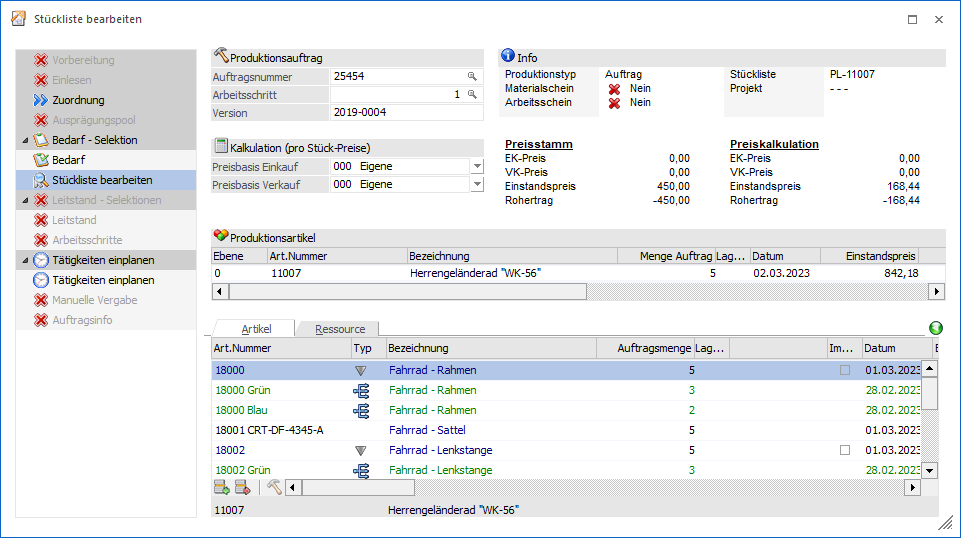

Das Fenster "Stückliste bearbeiten" kann sowohl aus der Belegerfassung der WinLine FAKT, als auch aus WinLine PPS heraus geöffnet werden. Details hierzu werden in dem Kapitel Stückliste bearbeiten - Aufruf des Fensters erläutert.

Für eine schnelle und zielführend Bearbeitung ist das Fenster in die folgenden Bereiche unterteilt:
ü Navigation und Auftragsdaten
Buttons
Ø Ok
Durch Drücken des Buttons "Ok" bzw. der Taste F5 werden alle getätigten Änderungen gespeichert.
Ø Ende
Bei Anwahl des Buttons "Ende" bzw. der Taste ESC wird der Programmbereich verlassen und alle nicht gespeicherten Änderungen verworfen.
Ø Info
Durch Drücken dieses Buttons wird die Auswertung "Produktionsinformation" am Bildschirm ausgegeben. In dieser werden sämtliche Arbeitsschritte und Komponenten des Produktionsauftrags angezeigt. Sollten für den Auftrag bereits Tätigkeiten eingeplant worden sein, dann werden diese ebenfalls ausgewiesen.
Ø Lagerorte automatisch aufteilen
Durch Anwahl des Buttons "Lagerorte automatisch aufteilen" wird bei allen Artikeln mit Lagerortstruktur eine automatische Aufteilung bzw. Zuweisung auf Lagerorte durchgeführt. Hierbei werden folgende Punkte berücksichtigt:
ü Die Aufteilung wird nur durchgeführt, wenn keine vollständige Zuweisung vorhanden ist (Lagerort-Kugel ungleich "grün").
ü Bei einer Aufteilung werden alle ggfs. bereits getätigten / vorhandenen Lagerorterfassungen zunächst initialisiert.
ü Bei der Aufteilung werden nur Lagerorten mit Bestand und der Lagerortfunktion "Produktionslager" berücksichtigt.
ü Sollte eine Lagerortvorgabe bzw. ein Lagerortvorschlag vorhanden sein, so wird dieses bei der Aufteilung berücksichtigt.
Ø Stücklistenebene Zurück / Vor
Wenn in dem aktuellen Stücklistenartikel Komponenten mit Stückliste (d.h. Handelsstückliste, Fertigungsstückliste oder Produktionsartikel) vorhanden sind, dann kann in diese Stücklisten per Doppelklick auf das Icon gewechselt werden (siehe Register "Artikel"). Mit den Buttons "Zurück" bzw. "Vor" kann anschließend zwischen diesen unterschiedlichen Ebenen gewechselt werden.
Ø Rechte Maustaste - Artikelreservierung
Klickt man mit der rechten Maustaste auf eine Komponente, welche die Produktionsart "2 - Bestellung mit Reservierung" hinterlegt hat, so kann über den Punkt "Artikelreservierung" das Reservierungsfenster "Produktion - Artikelreservierung bearbeiten" geöffnet werden.